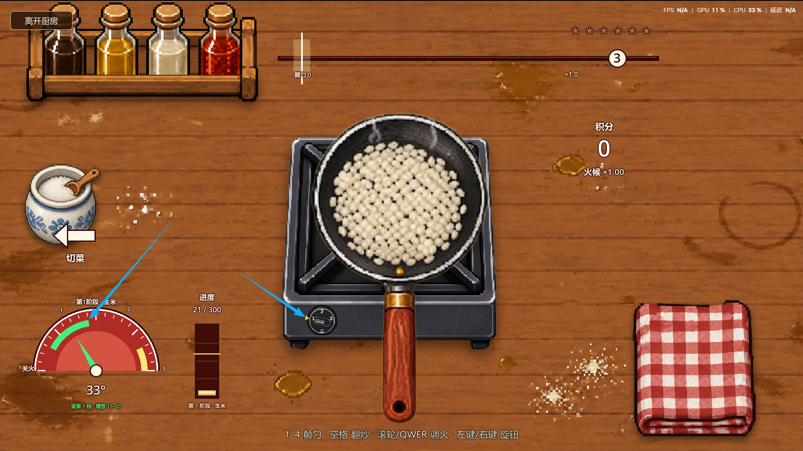
01
档位对齐温度
蓝色箭头指的是绿色温度区间：灶台档位要和当前需要的温度匹配。
切菜、下锅、控火、卡点。火候太高会炒糊，炒糊之后还得自己清理灶台。
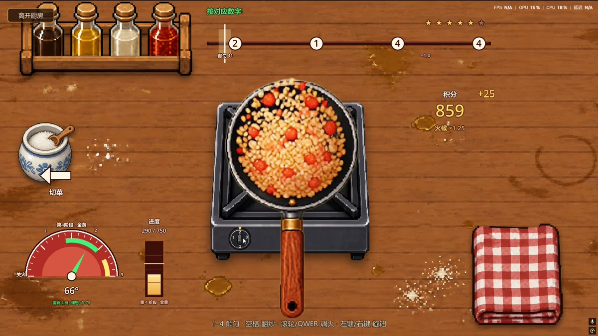
四步看懂烹饪的操作逻辑。

蓝色箭头指的是绿色温度区间：灶台档位要和当前需要的温度匹配。
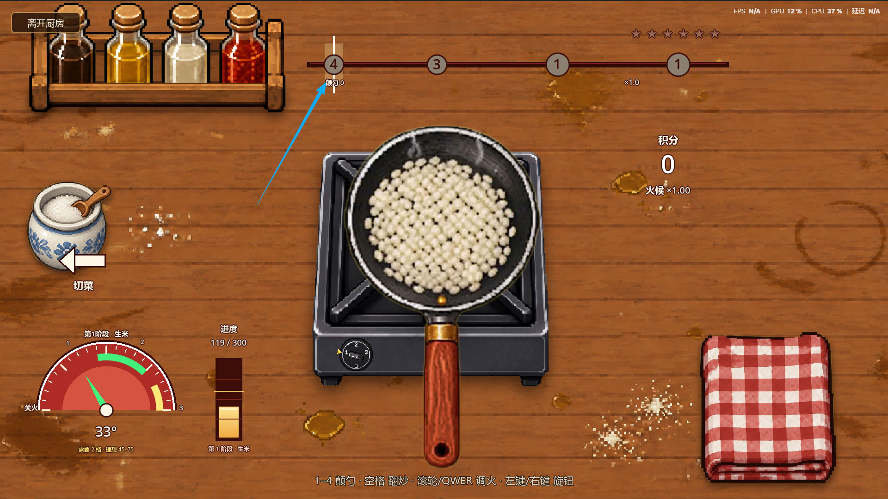
温度和档位不匹配的时候，上方的数字会呈现灰色状态，按了也无法触发。
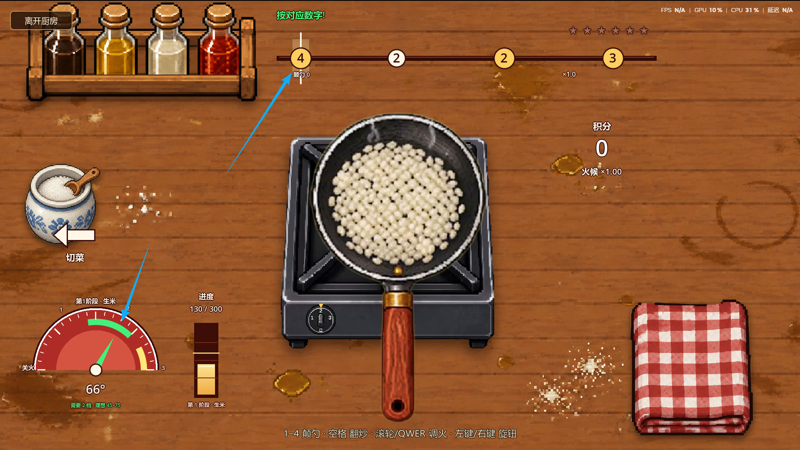
当档位与温度匹配以后，在数字滚动到触发点后，按下对应数字，即刻触发炒饭动作，增加炒饭进度。
提示：黄色数字代表完美卡点。卡得又快又准，积分收益更大。
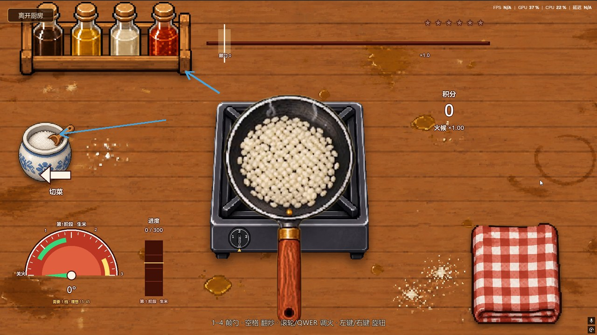
可以根据自己的喜好，或者 NPC 的喜好来添加调料。
备菜和火候环节的两段实机演示。
从整颗番茄到切片，备菜阶段同样有操作。
按对应数字颠勺，命中节拍会加分。
备菜、下锅、控火、卡点；做糊了要自己清理。
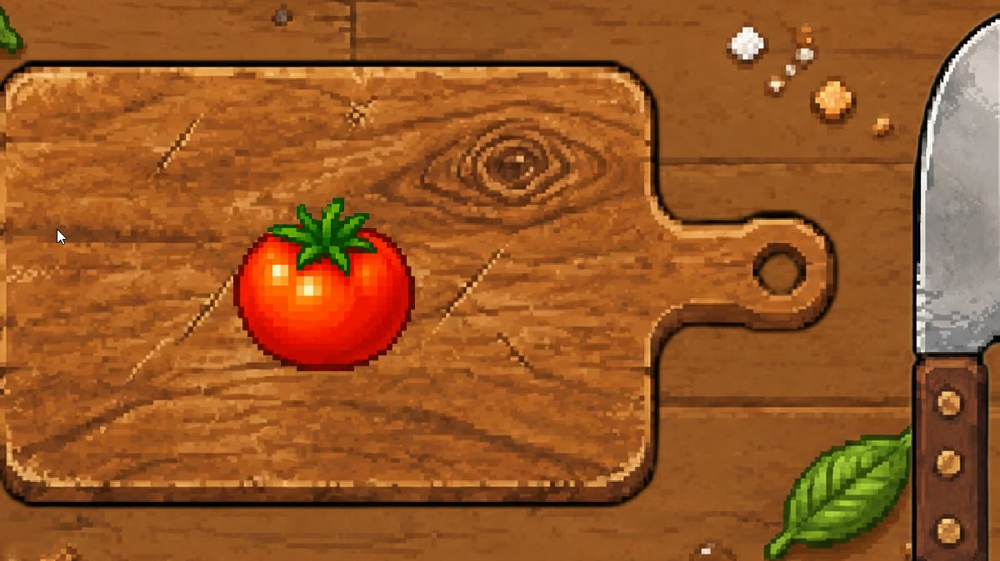
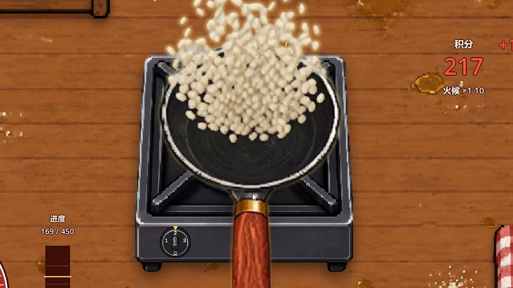
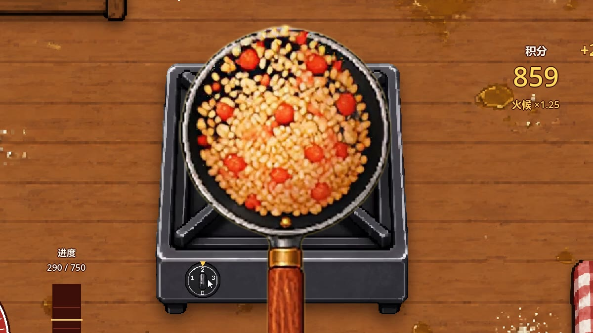
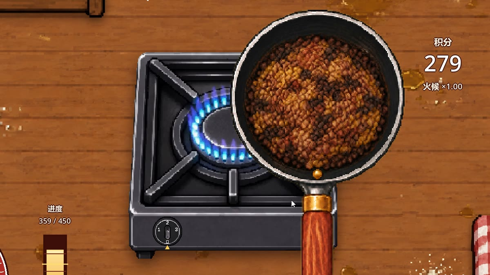
四个火候阶段，第三阶段加入番茄后会变成番茄炒饭。
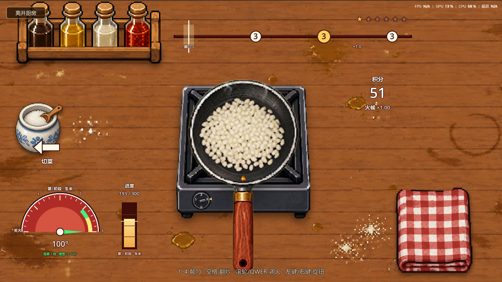
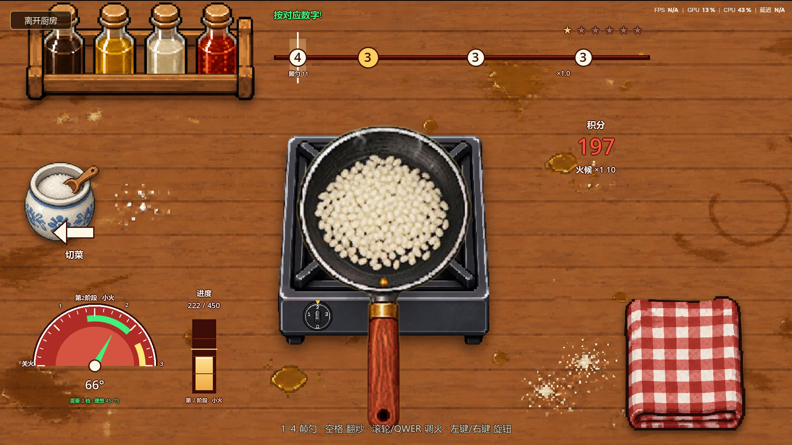
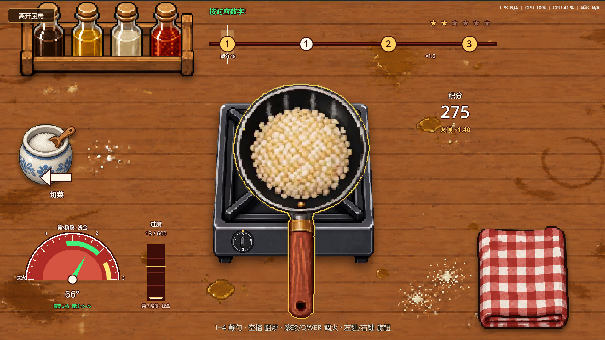
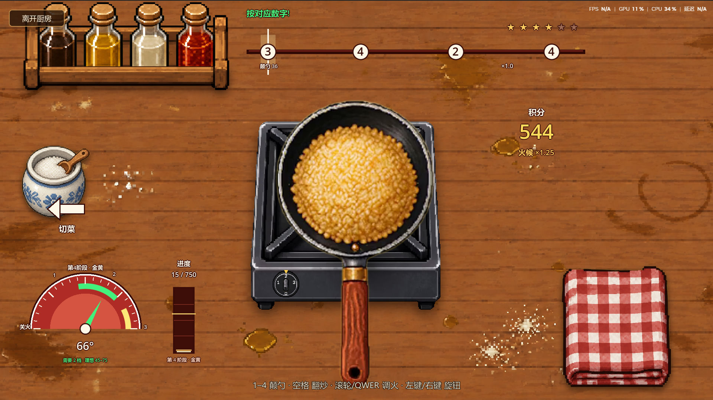
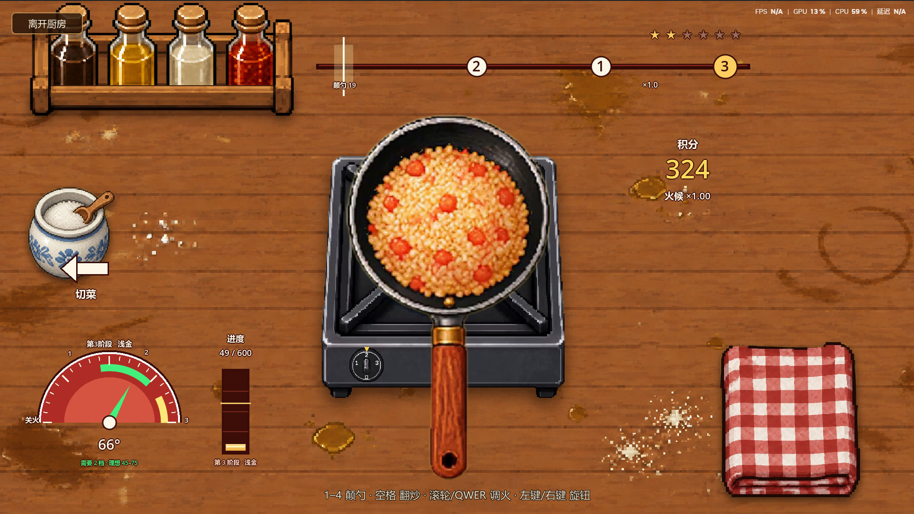
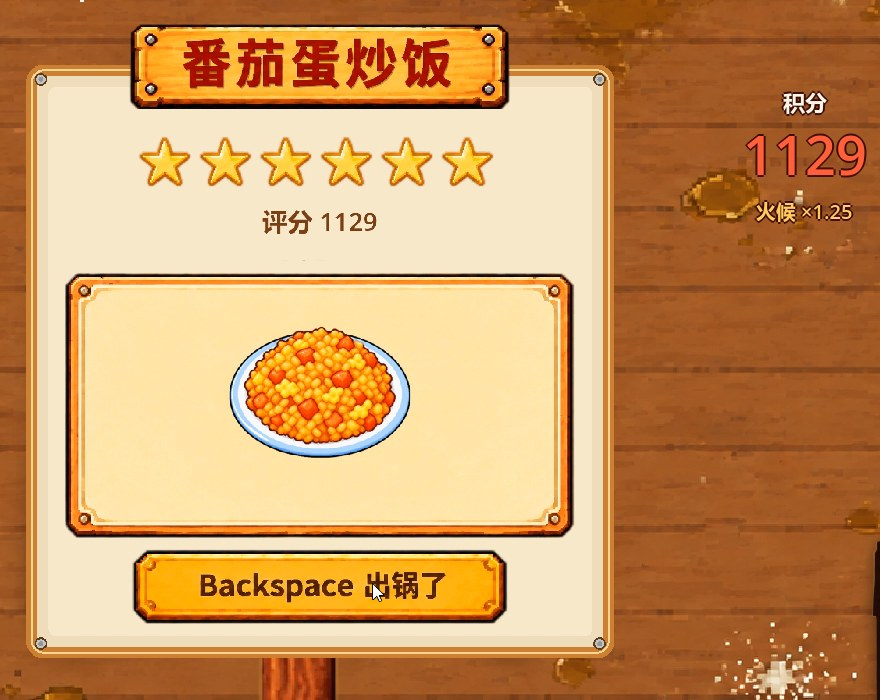
出锅结算评分和星级：火候、卡点、连击都会计分，最高六星。同一道菜，好坏结算卡上一眼能看出来。
一段完整的烹饪流程实录。
点开可看完整过程：切菜、下锅、控火、出锅。
生活系统很容易做成“点一下出菜”，我希望做饭本身有操作：看火、调档、等时机，每一步都要参与。
烹饪是短循环：米饭分四个阶段，从生米、微微熟、黄色到金黄；每个阶段对应不同档位。温度与档位不匹配时，数字会变灰，按了也触发不了；匹配后数字滚动，在触发点按下对应数字才会翻炒，黄色数字是完美卡点。
我把它做成一个有节奏的小游戏，在音效和细节上做了配合，卡到节奏点会有爽感；档位结合现实做饭的火候，让过程有起伏，不是一帆风顺地按键盘。参考《胡闹厨房》的“手忙脚乱”，但这里是单人节奏加火候判断。
火候太高会炒糊，炒糊不是重开，而是要把灶台清理干净。切菜还和农业系统联动，自己种的菜可以直接拿来切、下锅；口味功能和 NPC 模块联动，可以按 NPC 的口味做他喜欢的味道。
后续也能接更多作物、更多烹饪方式和食物。它和钓鱼一样，是战斗之外的另一种节奏：有操作、有失误、有收拾，也有做成一锅好饭的成就感。